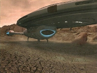
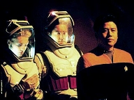
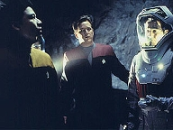
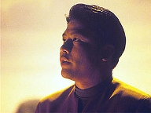
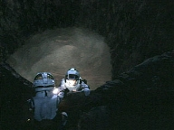
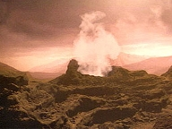

| MANCHETE
DO EPISDIO
Voyager
e sua tripulao so duplicadas
Episódio
anterior | Prximo episódio Sinopse:
Data Estelar: Desconhecida  O
combustvel da Voyager acaba. Quando os sistemas comeam a ser cortados e
alguns decks evacuados, Seven descobre um planeta Classe-Y com alta
concentrao de deuterium. Infelizmente, Chakotay ressalta que a Frota se
refere quele tipo de astro como "planeta demnio", por causa da
atmosfera txica. Quando a tripulao tenta transportar o deuterium a bordo,
ocorre uma exploso. Kim e Paris, então, se candidatam a descer e explorar o
combustvel da própria superfcie. Apesar de protegido por trajes ambientais,
Kim sugado para uma piscina de composto metlico e tem a roupa danificada.
Seu oxigênio escapa rapidamente. O colega tenta ajud-lo, mas também enfrenta
um defeito na vestimenta. Ambos desmaiam antes de chegar nave auxiliar.
Sem comunicao com os oficiais, Janeway decide
aterrissar a Voyager no planeta e mandar um grupo avanado para procur-los.
Chakotay e Seven vestem os trajes ambientais e iniciam a busca. No demoram a
achar a nave auxiliar, mas também não encontram ninguém a bordo. O
comandante puxado para uma poa semelhante que tragou Kim. Enquanto tenta
se levantar, Paris aparece apenas de uniforme e ajuda Seven a levantar
Chakotay.
 O piloto explica que ele e Kim aparentemente se adaptaram
ao ambiente e convida os colegas a tirarem os trajes especiais. Eles se recusam
a correr o risco. Chakotay pede que voltem Voyager para exames. Assim que
chegam, no entanto, Paris e Kim comeam a sufocar. Eles so levados
Enfermaria e o Doutor rapidamente ergue um campo de conteno, preenchendo-o
com os gases do planeta. S assim a dupla consegue respirar. De acordo com o
médico, o fludo metlico entrou na corrente sangnea dos dois e alterou
sua fisiologia em nvel celular. A no ser que consiga reverter os efeitos,
Tom e Harry tero de ser deixados para trs.
Janeway e Torres analisam a substncia metlica no
laboratrio. Ficam surpresas quando o composto duplica um dedo da tenente. Na
superfcie, o grupo avanado descobre os corpos de Kim e Paris. Quase mortos,
so transportados para a Enfermaria. A duplicata de Kim, que acompanhava o
grupo, recusa-se a voltar Voyager, alegando ter uma ligao com o planeta.
A situao fica tensa quando uma imensa piscina comea a se formar debaixo da
nave. Janeway tenta coloc-la em rbita, mas uma fora eletromagntica
impede a subida.  Quando consegue transportar a
duplicata de Kim a bordo, a capitã ordena que sua nave seja libertada. Ele
tenta explicar por que os prendeu. O composto vivo, mas nunca experimentou
conscincia. Quando entrou em contato com os corpos de Paris e Kim, ficou
ciente pela primeira vez e agora quer mais. A tripulao concorda em doar
amostras de DNA, para que o planeta se auto-povoe. Depois disso, a Voyager
solta e continua sua jornada.
Comentrios:
Por onde comear a análise do segmento da semana?
difícil achar apenas um adjetivo, mas "tolo" aproxima-se
bastante do sentido de "Demon". Temos aqui uma premissa
interessante at. Acabou o "combustvel" da Voyager. No vale nem
a pena especular sobre como a capitã deixou que se chegasse a tal situao.
Pensemos que a nave percorreu centenas de anos-luz sem uma fonte de deuterium
ao alcance. De imediato, sente-se que algo "no cola" na atitude
dos oficiais. O humor está totalmente fora de propósito em momentos de
desespero como aquele. A, então, Seven - essa sim, bastante preocupada -
continua trabalhando na Astrometria e descobre um planeta Classe Y.
 Chakotay a desencoraja, explicando que a Frota considera
aquele tipo de planeta o de ambiente mais hostil vida. Nova contradio.
Tom e Harry descem em seguida e caminham tranqilamente pela superfcie
(supostamente corrosiva) com seus trajes espaciais. Sobre o alferes, há de se
surpreender pelo seu sbito ar de confiana. No que haja algo errado. J
se passaram quatro anos nesse laboratrio chamado USS Voyager. Mas Harry
voltar a seu old charming self a partir do prximo episódio. Tuvok
também está mais irritante do que o usual. Por que implica tanto com os
cobertores de Neelix? No lgico o Talaxiano
ter de usar obrigatoriamente os lenis-padro da Frota. É claro, tudo
isso apareceu na história apenas para provocar a sequência na Enfermaria.
Em momento raro na série, nem o Doutor se salva. Pela
gravidade da situao, com o racionamento de energia e tudo mais, por que o
programa dele permaneceu ativo sem que houvesse emergncias mdicas? Ainda
que o tenham preservado em respeito a seus sentimentos, por que ninguém o
transferiu ao emissor móvel? Depois, quando de fato há uma emergência, por
que o médico aciona as luzes ao mximo? A nave no estava operando em modo
cinza? Tudo incoerente. E os roteiristas escreveram dessa forma apenas para
precipitar dilogos de pseudo teor humorstico.
 Para se ter em mente quo desesperadora era a
situao, a capitã ordenou que a Voyager aterrissasse na superfcie do
planeta. Deciso questionvel, uma vez que ela própria alertara sobre o
perigo de mandar uma nave auxiliar. De qualquer forma, Tuvok avisa:
"Agora que descemos, no subiremos to cedo". Ou seja: ou a nave
consegue deuterium, ou todos viram churrasco em questo de horas (sim, porque
B'Elanna diz que eles tm apenas duas horas de oxigênio). Quando o composto
mimtico reage e Janeway tenta recolocar a Voyager em rbita, evidentemente
l se vai mais energia, mormente porque havia uma fora impedindo a
decolagem. Passam-se dilogos, argumentaes, e a nave consegue ser
liberada. Mas em momento algum ela coletou o deuterium de que precisava - e
esse o maior furo no roteiro de "Demon".
H também questões éticas interessantes aqui. No
parece conveniente demais que a discusso sobre a clonagem da tripulao
no tenha sido mostrada em tela? Deduz-se que todos a bordo aceitaram ser
duplicados e abandonar suas duplicatas no planeta - duplicatas essas que
retm as memrias dos tripulantes de origem. E quanto Primeira Diretriz?
Janeway literalmente d toda a tecnologia e os conhecimentos da Frota Estelar
a uma raa recm-criada, e depois parte para o Quadrante Alfa sem qualquer
restrio ou dúvida.
 No sejamos to negativos. H, sim, belas surpresas
no episódio. Os efeitos visuais so maravilhosos. "Demon"
traz sem dúvida a melhor sequência de pouso da Voyager na série. Aderir ao
CGI foi uma deciso acertada do estúdio. Outro aspecto positivo foi a
participação de todo o elenco na história. Em tempos de atenções voltadas
apenas a Seven, foi bom ver uma distribuio mais equilibrada dos papis.
Mas no se anime, ela volta a ser a estrela no segmento seguinte.
Citaes:
Janeway - "Everyone redouble your
efforts. Keep your eyes open for new sources of deuterium. Tuvok, Chakotay, I
want recommendations for further methods of conservation. Harry, you and I
will give them a hand in geophysics. See if we can't synthesise a substitute
fuel. In the meantime, we stay in grey mode. If anybody's got any other ideas,
I'm listening."
("Todos redobrem seus esforos. Mantenham os olhos abertos para novas
fontes de deuterium. Tuvok, Chakotay, quero recomendaes para outros
métodos de conservação. Harry, você e eu vamos ajud-los na geofísica.
Veja se no podemos sintetizar um combustvel substituto. Nesse meio tempo,
vamos manter o modo cinza. Se algum tiver outras idias, estou ouvindo.")
Paris - "We could set up a bicycle in the mess hall, attach a
generator, pedal home."
("Poderamos montar uma bicicleta no refeitrio, ligar um gerador,
pedalar para casa.")
Janeway - "Now why didn't I think of that?"
("Como que no pensei nisso?")
Kim - "Captain, maybe I can help."
("Capit, talvez eu possa ajudar.")
Paris - "Harry, the bicycle thing was just a joke."
("Harry, aquela coisa da bicicleta foi s uma piada.")
Torres - "Take Seven of Nine with you."
("Leve Seven of Nine com você.")
Chakotay - "You're recommending her?"
("Você a está recomendando?")
Torres - "You said you needed cool heads, didn't you? Nobody's head is
cooler than hers."
("Disse que precisava de cabeas frias, no ? Ningum tem a cabea
mais fria que ela.")
Trivia:
 Os eventos do episódio repercutem em "Course: Oblivion", da
quinta temporada.
Os eventos do episódio repercutem em "Course: Oblivion", da
quinta temporada.
O departamento de maquiagem provavelmente usou em Tim Russ as orelhas Vulcanas
do Tuvok maligno de "Living Witness". Aqui, elas estão maiores
do que as convencionais.
Ficha
técnica: Direo de
Anson Williams
Roteiro de Kenneth Biller
História de Andre Bormanis
Exibido em
06/05/1998
Produção: 092 Elenco: Kate
Mulgrew como Kathryn Janeway
Robert Beltran como
Chakotay
Roxann Biggs-Dawson como B'Elanna Torres
Robert
Duncan McNeill como Tom Paris
Ethan Phillips como
Neelix
Robert Picardo como Doutor
Tim Russ
como Tuvok
Jeri Ryan como Seven of Nine
Garrett Wang como Harry Kim
Episódio
anterior | Prximo episódio
|